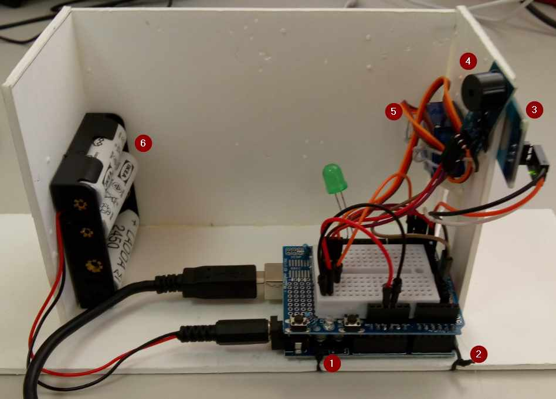
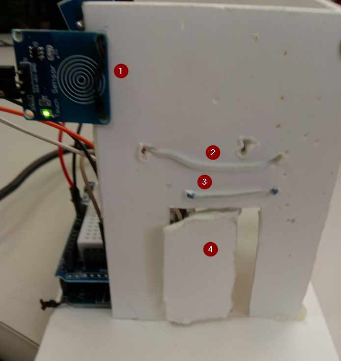
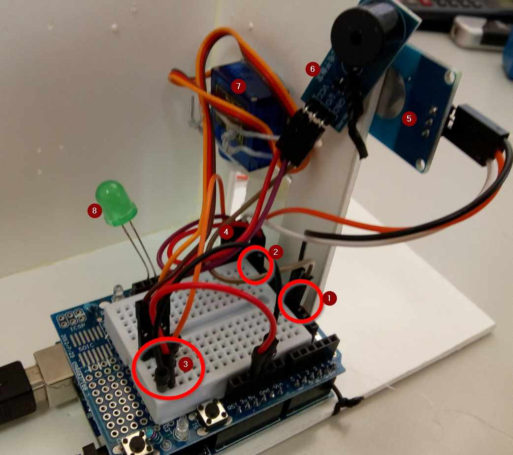
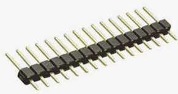

3.3 APERTURA DE PUERTA
3.3.1 Objetivo
Esta vez vamos a centrarnos con la apertura de la puerta, dejaremos el LDR para la alarma
- Cuando se pulse el interruptor táctil (sería como una llave táctil)
- Se abre la puerta
- Al cabo de 5 segundos, tiempo suficiente para entrar
- Se avisa que la puerta se va a cerrar con 3 pulsos buzzer
- Se cierra la puerta
- Por la pantalla del ordenador saldrán mensajes de apertura y cierre
3.3.2 Maqueta
Esta vez en la maqueta ponemos los siguientes elementos
- Fijación placa Arduino
- Fijación placa Arduino
- Interruptor táctil
- Buzzer
- Servo
- Portapilas

Detalle por delante
- Interruptor táctil
- Fijación servo
- Fijación servo
- Puerta si, ya sé, un poco chapuza ¿y qué pasa?

3.3.3 Esquema de conexiones
Es el mismo mostrado en 2.4 APERTURA DE LA PUERTA, pero ahora vamos montando la maqueta:
- Terminales GND
- Terminales +5V
- Terminales Servo van aparte (ver nota) con D4 al control del servo
- Terminales
- D2 Interruptor táctil
- D3 Buzzer activo
- Interruptor táctil
- Buzzer activo
- Servo
- Led el pin largo en D13 y el corto en GND.

Nota: El servo al tener terminales hembra, se ha optado por conectarlo diréctamente en la placa protoboard utilizando machos machos como el de la figura:

Nota: Sí, ya sé que conectar el LED DIRECTAMENTE EN D13 no es una buena práctica, pero internamente Arduino tiene unas resistencias en cadad entrada/salida de 30k que lo puede aguangar, o sea, no es lo correcto pero no pasa nada (y como es muy cómodo, y necesitamos espacio, optamos por lo práctico). Si lo pones al revés no funcionará (no se estropea nada pero asegúrate el pin largo al D13 y el corto al GND).
3.3.4 Video
3.3.5 Código
///////////////////////////////////////LIBRERIAS
#include <Servo.h>
///////////////////////////////////////ENTRADAS SALIDAS DIGITALES ///////
// 0 ocupado por el puerto serie ordenador-arduino
// 1 ocupado por el puerto serie ordenador-arduino
const int PULSADORTIMBRE =2; //sensor tactil
const int TIMBRE =3; //buzzer activo
const int PUERTA = 4; //servo puerta
const int LED = 13;
////////////////////////////////////// ENTRADAS ANALÓGICAS /////////////
////////////////////////////////////// OBJETOS
Servo myservo; //objeto servo
///////////////////////////////////////VARIABLES
const int ABIERTO =0; //abierto puerta
const int CERRADO =75; //cerrado puerta, se ha modificado con respecto al cierre total pues tropezaba con la pared
bool PUERTAABIERTA; //guardará si está abierto o no
/////////////////////////////////////FUNCIONES
void CerrarPuerta();
//////////////////////////////////////////////////////////////////////////
/////////////////////////////////////////INICIO //////////////////////////
//////////////////////////////////////////////////////////////////////////
void setup() {
Serial.begin(9600); //inicializar el puerto serie del ordenador
////////////////////////////////fijar input/output
pinMode(PULSADORTIMBRE, INPUT);
pinMode(TIMBRE, OUTPUT);
pinMode(PUERTA, OUTPUT);
pinMode(LED,OUTPUT);
///////////////////////////////fijar situación inicial
digitalWrite(TIMBRE,HIGH); // timbre apagado
myservo.attach(PUERTA); //servo en el pin correspondiente
myservo.write(CERRADO); //puerta cerrada
PUERTAABIERTA = false;
}
//////////////////////////////////////////////////////////////////////////
/////////////////////////////////////////BUCLE ///////////////////////////
//////////////////////////////////////////////////////////////////////////
void loop() {
//////////////////////////// timbre ////////////////////////////////////////
if (digitalRead(PULSADORTIMBRE)){
Serial.println("Abriendo puerta .... ");
PUERTAABIERTA=true;
myservo.write(ABIERTO);
delay(3000);
CerrarPuerta();
}
}
//////////////////////////////////////////////////////////////////////////
//////////////////////////////////FUNCION CERRAR PUERTA////////////////////
//////////////////////////////////////////////////////////////////////////
void CerrarPuerta(){
if (PUERTAABIERTA){
for (int i=1;i<=3;i++){
Serial.println("CERRANDO PUERTA !!!");
digitalWrite(LED,HIGH);
digitalWrite(TIMBRE,LOW);
delay(1000);
digitalWrite(TIMBRE,HIGH);
digitalWrite(LED,LOW);
delay(1000);
}
myservo.write(CERRADO);
PUERTAABIERTA=false;
Serial.println("Puerta cerrada");
}
}